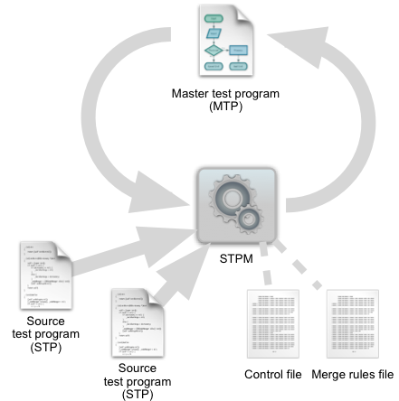
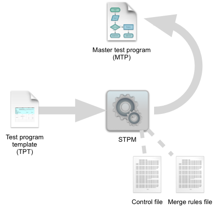

SmarTest Program Manager operating principles
SmarTest Program Manager (STPM) integrates and maintains test programs in the SmarTest device directory based on the commands and settings you specify in the control file and the merge rules file. STPM is launched from the command line.

STPM can add patterns to test programs or modify binary patterns to merge timing in such a way that the number of different levels and timing settings is reduced. Optimizing resources in this way makes it easier for you to maintain the test programs and also frequently reduces test times.
STPM processes a master test program (MTP) by adding, replacing, or removing individual test specified in source test programs (STPs). The exact actions to perform are provided in a control file that contains the commands for adding, replacing, and removing tests.
Which parts of the MTP STPM may modify can be controlled by the merge rules file. You can have different merge rules files and specify the appropriate one in each control file.
Optionally, you can have STPM back up the MTP before changing it.
Operation using test program templates
STPM also lets you create MTPs from a test program template (TPT) and a set of STPs. This works much like depicted in the graphic above, except that the TPT replaces the MTP and the STPs as the input to STPM:

For more information on working with TPTs, see Using STPM with test program templates.
Functional changes
- Introduced in SmarTest 7.0.4